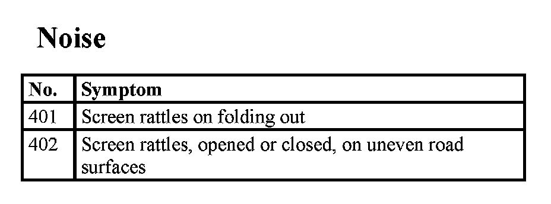

Fault Profiles For Central Information Display
Fault profiles for Central Information Display
On the Central Information Display, fault profiles that are not registered by fault memory entries can occur alongside the possible fault memory entries. The following table lists the most frequent fault profiles. The appropriate measure for fault elimination is described in the test module. Select the fault profile from the list and enter the corresponding number.
